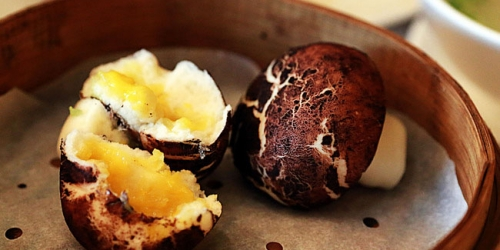
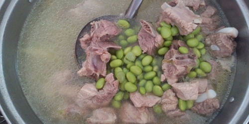
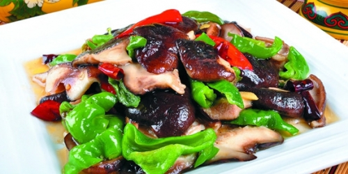
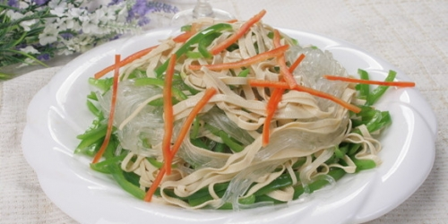
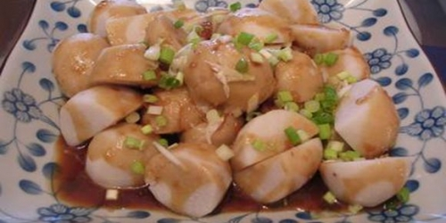
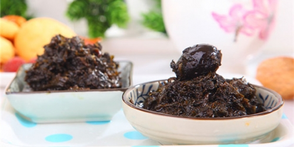
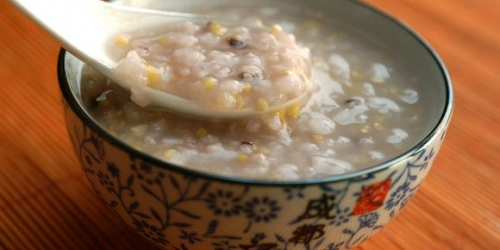

-

记忆中的菌菇汤，你怀念吗？
小时候，常听奶奶说，“冬吃萝卜，夏吃姜，一年四季喝菌汤”。我以前只知道菌菇汤很好喝， 长大了才知道菌菇汤不止好喝，原来还有很高的营养价值。今天， 就让天天营养小编和大家一起来学学怎么做出美味的菌菇汤吧！蘑菇有什么营养价值？据研究表明， 蘑菇中，富含着十八种氨基酸物...
2016-09-21admin 62 -

炒青豆，饭桌上的一抹绿！
青豆，也叫豌豆，是日常生活中一种十分常见的菜品。青豆功效众多，味道和口感都不错，有多种烹饪方法。 今天，天天营养小编就为大家介绍几种炒青豆的方法，大家一起来学学吧！一、青豆有什么营养价值？ 豆类都是营养很丰富的，青豆也不例外，它能起到健脑的...
2016-09-21admin 17 -

食欲食欲快回来，夏季开胃小菜炒香菇
夏季往往是大家食欲不振的季节，酷暑难耐平时热爱的食物渐渐变得越来越吃不下去，油腻的东西更是难以下咽， 今天天天营养的小编将为大家带来一款夏季素食——炒香菇。 一、中国特产、世界第二大食用菌——香菇营养价值高香菇是世界第二大食用菌也是我国特产之一，在民间...
2016-09-21admin 14 -

素食大全送你一篇全攻略，消暑解热之食就靠它！
炎热夏季已然进入三伏的末伏天了，秋老虎已经是最后的强弩之弓了，但仍然高深呼啸着它的不甘心， 天气是无法言说的闷热，全国各地的人们为这个恼人的天气无可奈何，却又没法，可谓是历年来最炎热的秋季也不为过。 连小编的家乡，号称天府之国的成都也无能幸免，天热的只想呆在空调房...
2016-09-21admin 12 -

记忆中的菌菇汤，你怀念吗？
芋头相信大家都吃过，因为芋头含有丰富的维生素和人体所需的微量元素，深受人们的喜爱。 儿时的我对这样的美味实在难以抵抗，你呢？那你知道芋头蒸多长时间？怎样做才能更好的展现它的美味呢， 现在和天天营养小编一起聊聊那些年我们吃过的美味食物—芋头吧。一、其貌不...
2016-09-21admin 5 -

潮州菜系的一朵奇葩，橄榄菜的做法你知道多少
橄榄菜的做法工艺可以源远流长，可以追溯到宋代，“清、鲜、爽、嫩、滑”等特点让橄榄菜深受大众的喜爱， 可说是名闻遐迩的潮州菜系中的一朵奇葩。色泽乌艳、油香浓郁、美味诱人的橄榄菜也是潮汕人日常居家的小菜美食。 那么橄榄菜的做法到底有哪些呢?下面天天营养小编...
2016-09-21admin 9 -

9款超级美味又营养的粗粮粥，健康身体全靠吃粗粮！
多吃五谷杂粮，有益身体健康，五谷杂粮也就是我们常说的粗粮。每天一碗粗粮粥，不仅能为人体补充多种营养， 还能有效预防慢性疾病，达到延年益寿的目的。但是，粗粮有这么多，怎么样搭配才能既美味又营养呢？下面， 天天营养网小编就来为大家介绍几种粗粮粥的养生搭配，...
2016-09-21admin 62

Powered by MetInfo 5.3.10
食品之家 版权所有 2008-2016 粤ICP备0123456789-1